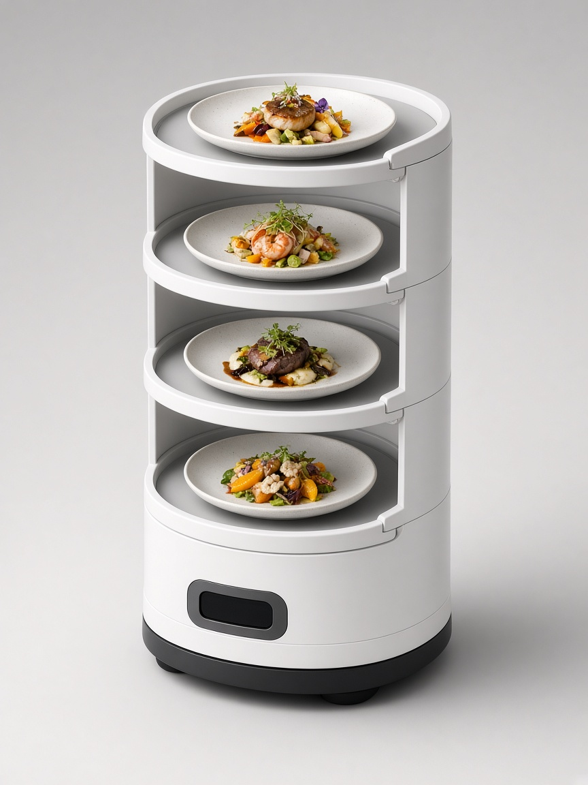

 Live demo & mapping video on floor visit
Live demo & mapping video on floor visit
Pudu Robotics · Universal indoor delivery
Next-gen universal delivery workhorse — VSLAM+ navigation, three adjustable trays, and the most common everyday runner configuration on Australian restaurant floors.
Approx. A$14,990 – A$16,159
AU shelf: A$14,990 (PC Market) to A$16,159 inc GST (AGC). RoboBuddy lists A$14,999.
| Manufacturer | Pudu Robotics |
|---|---|
| Model | PuduBot 2 (PDFD12 / PDFD22) |
| Dimensions (W×D×H) | 580 × 535 × 1290 mm |
| Weight | ~37–39 kg |
| Trays | 3 adjustable (520 × 435 mm) |
| Payload | Rated 10 kg / tray |
| Battery | 20 Ah · ~12 h · charge ~3 h |
| Screen | 7″ or 10.1″ LCD variants |
| Best for | All-day dining, cafés, multi-pass kitchens |
| AU market sources | AGC Equipment, RoboBuddy, PC Market, Pudu product docs |